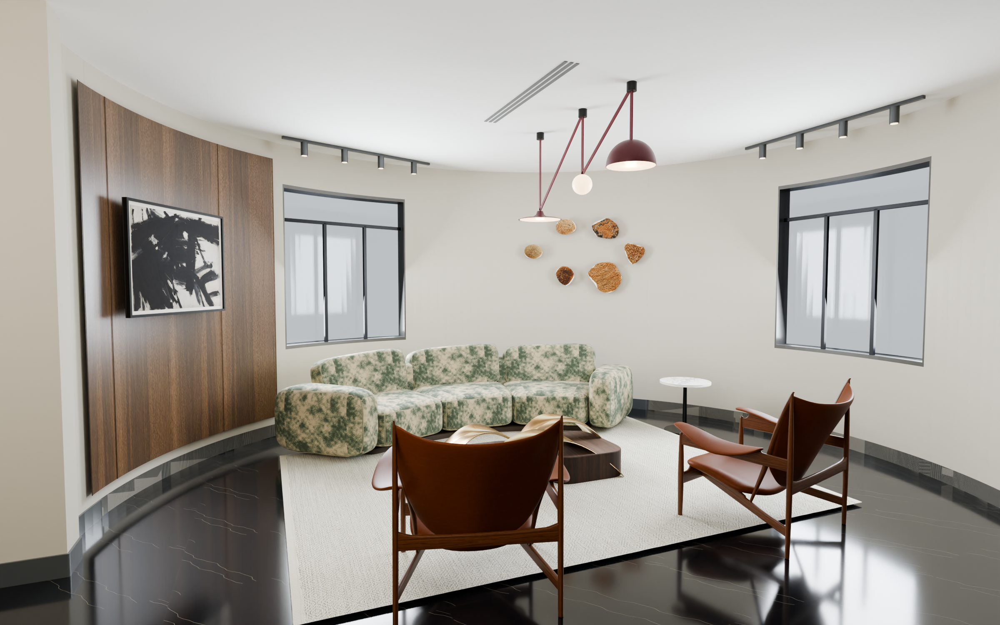
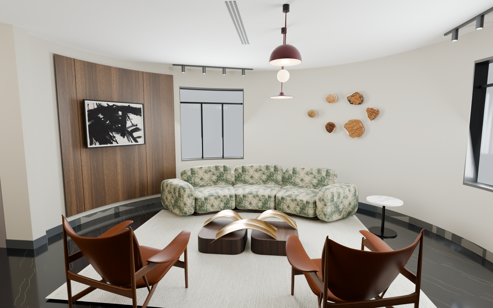
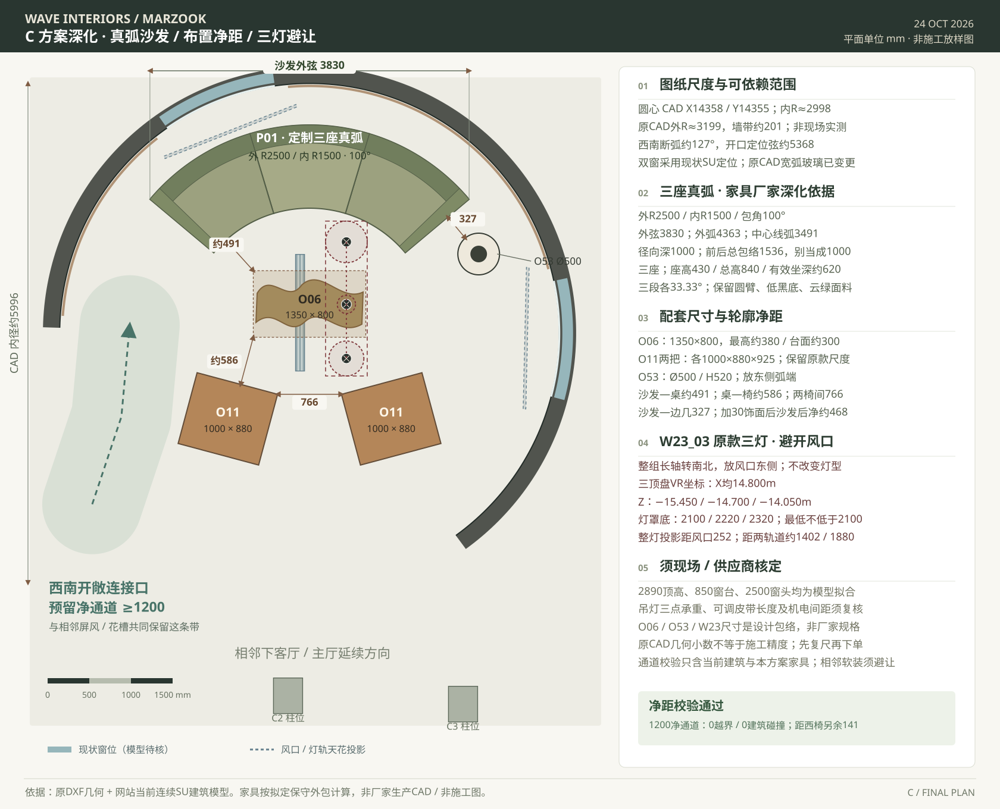
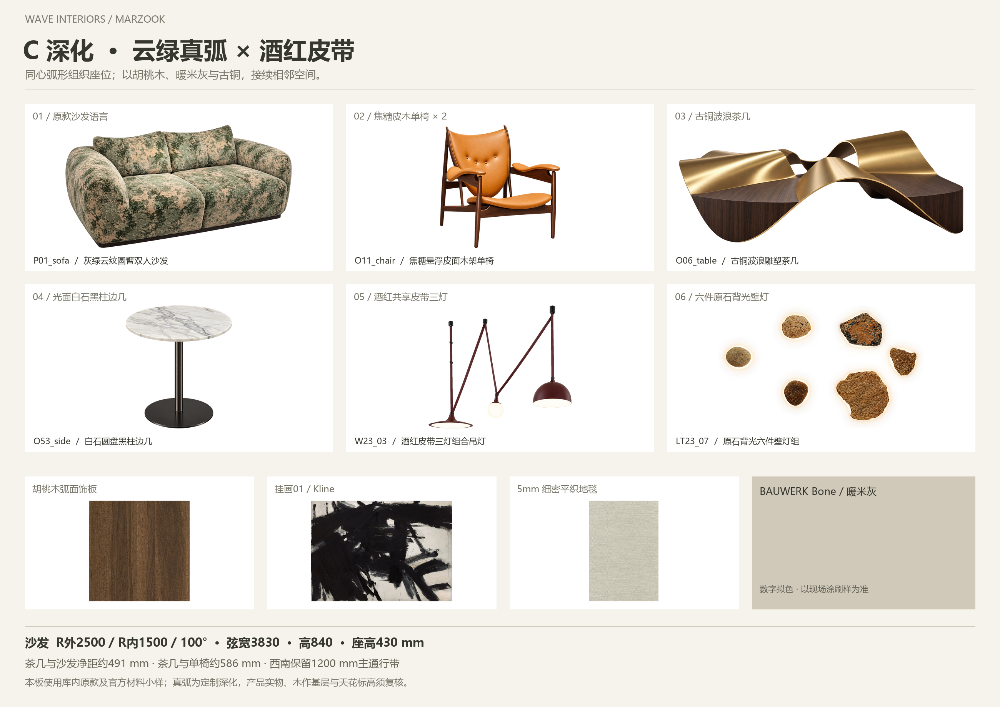

定制三座弧形沙发
外半径2500 / 内半径1500 / 夹角100°
弦宽3830 × 前后包络1536 × 高840 mm径向深1000，座高430；完成饰面后，背后留量约468 mm。
A TRUE ARC, DRAWN FROM THE ROOM
保留已选 C 的原款家具，把沙发做成与圆厅同心的三座弧形；酒红皮带三灯、胡桃木与古铜接续相邻区域。
客户 CAD 曲线 · 原款家具与面料依据 · 物理材质渲染 / 本轮无 AI 生图 · 效果确认后再改 VR
01 / FROM THE OPEN ENTRANCE
左窗左侧的实体弧墙做烟熏胡桃木大板，Kline 黑白画落在木面上；其余大面用暖米灰，给云纹软包与原石壁灯留出安静背景。

02 / THE CONCENTRIC SOFA
P01 原款圆臂、云绿面料与独立靠包，深化成真正的同心扇环三座；保留深棕内收底座、焦糖皮木椅与原款古铜波浪茶几。

03 / SCALE & CLEARANCES
原 CAD 圆厅内净直径约 5996 mm。新饰面厚度暂按 30 mm 预留；保持西南开放连接与连续黑石地面。
外半径2500 / 内半径1500 / 夹角100°
弦宽3830 × 前后包络1536 × 高840 mm径向深1000，座高430；完成饰面后，背后留量约468 mm。
O06茶几占位1350 × 800 × 高380 mm
沙发—桌约491 / 桌—椅约586 mm两把O11按原厂名义1000 × 880 × 高925 mm排布，不为图面缩小椅子。
三顶盘沿南北方向错落在风口东侧
灯罩底标高2100 / 2220 / 2320 mm灯组与现有模型风口投影相隔约252 mm；天花2890为模型拟合，现场与厂家再核。

04 / MATERIAL RELATIONSHIPS
云绿与焦糖是主角，深胡桃与古铜作骨架；酒红只落在皮带吊灯，呼应相邻屏风。保留原黑石地面与踢脚，不再叠加棋盘、格栅、镜花或第二块红墙。

ORIGINAL PRODUCTS & REAL MATERIALS
Shinnoki Smoked Walnut，选1mm真木皮+纸背laminate执行版，由木作在弧形基层上施工；19mm成品MDF板不能直接作为可弯板。
官方色纹 ↗ · 弧面执行材料 ↗BAUWERK Bone，暖中性、低纹理的平静墙面。图中为数字材质近似；按现有基层做试刷样后定色与底漆工艺。
官方产品与基层指引 ↗P01云绿沙发语言、O11焦糖皮木椅、O06古铜波浪茶几、O53白石黑柱边几、LT23_07石灯、W23_03三灯与Kline01。
逐件来源、渲染及定制说明 ↗本轮用客户 CAD 曲线、现有建筑模型、库内原款照片/贴图与原厂款式模型进行确定性物理渲染，没有新增 AI 生图。弧形沙发、吊灯布点与木作是设计深化，不是既有量产弧形SKU或施工照片；单视图未显示的家具背面与折弯结构含试摆推定。窗细部、天花标高、真实产品规格和涂刷样均须现场/厂家复核。排除洞石、羊羔绒、长毛绒与毛皮。已完成的空间及VR保留，本次未修改VR。